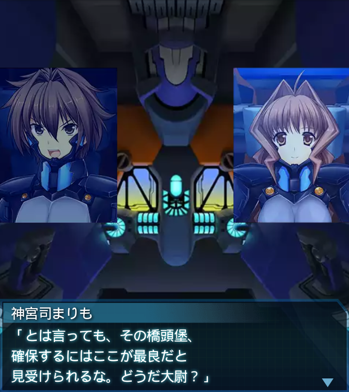

中東・アンバールハイヴ内
龍浪響
「…ちくしょう…！柚香が、土砂の
下敷きに……！返事をしろよ、
少尉…！」
神宮司まりも
「落ち着け、龍波中尉。バイタルに
異常は出ているものの、千堂機は
健在。無事だ」
『誰』
「救助は後続に任せて、俺達は前進
するぞ！もたもたしていては背中を
守っている連中の負担になる！」
龍浪響
「こんな、いつどこからＢＥＴＡが
出てくるか分からねえ所に少尉を
置いていくって言うんですか？」
龍浪響
「何とか…救助を優先する事は
できませんか！？」
神宮司まりも
「軍務に私情を挟むな。今は橋頭堡
の確保が最優先だ。貴様も部隊を
預かる者だろう？冷静になれ」
龍浪響
「し、しかし…！！」

神宮司まりも
「とは言っても、その橋頭堡、
確保するにはここが最良だと
見受けられるな。どうだ大尉？」
『誰』
「同感です。では部隊を分けて
救助作業と同時並行しましょう」
龍浪響
「少佐、大尉…感謝します！」

神宮司まりも
「貴様等、敵が接近している！
橋頭堡確保のため、殲滅しろ！
ここで抜かるなよ、龍浪！」
龍浪響
「了解！任せてください！！」
イルフリーデ
「周囲のＢＥＴＡ、全て沈黙です！
ふぅ、しばらくは落ち着けるかな」
ブリギッテ
「それにしても、ハイヴの構造は
頑強そのものと聞いていたのだが。
まさか天井が崩落するとは…」
イルフリーデ
「融合世界の影響で脆くなっていた
のかもしれませんね。様々な地形が
混ざりこんでいるようですし」
ブリギッテ
「戦車級を倒れながら撃っていた
千堂機の流れ弾が当たった程度で
崩れたようだからな。一理ある」

『誰』
「こちら『誰』、そちらの
様子はどうか？崩落はかなり大規模
だった様子だが…」

ブリギッテ
「殿を務めていたので巻き込まれは
しましたが無事です。ですが、分断
されてしまいましたね」
『誰』
「復旧に全力を向けている。
ところでそちら側の横坑の状況は
どうだ？」
ブリギッテ
「音波による簡易調査ではかなり
脆いですね。それが暫く続いて
いると思われます」
イルフリーデ
「大尉のいる地点は元来の頑強な
構造を保っているようです。その点
からも橋頭堡として適切です」
『誰』
「了解。通路が繋がり次第後を
追う。そちらは注意しつつ先に
進んでくれ」
「「了解！」」